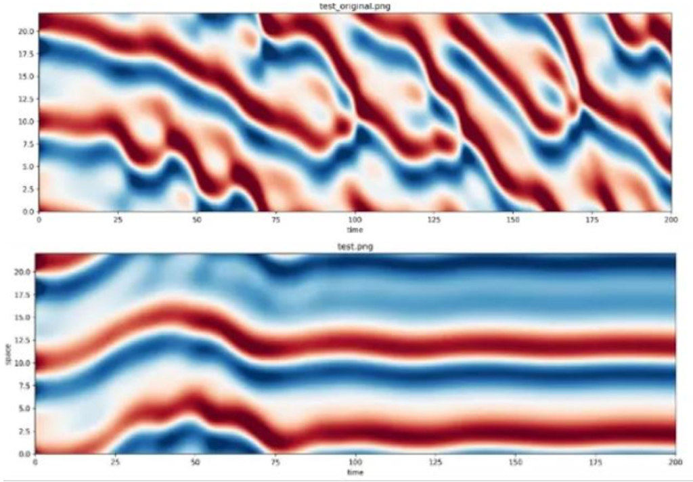
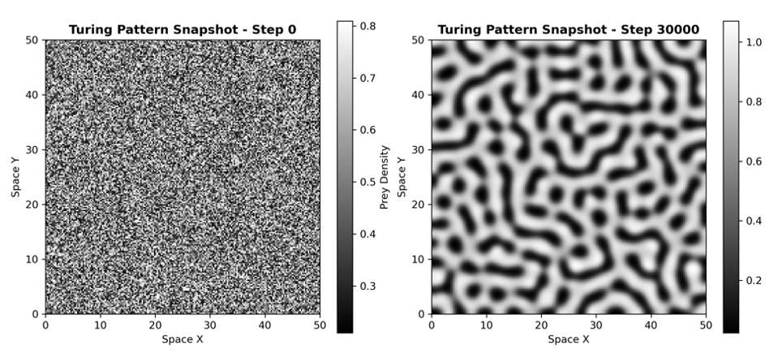
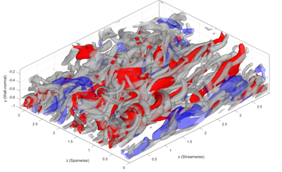
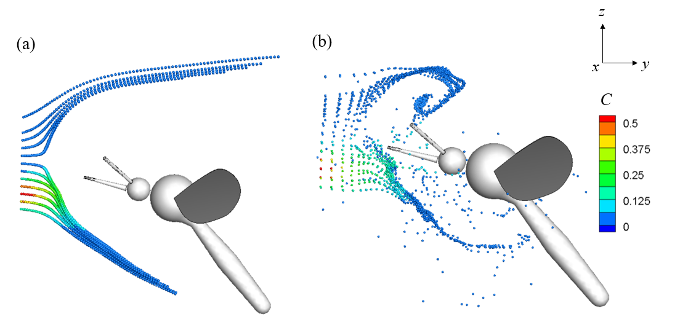
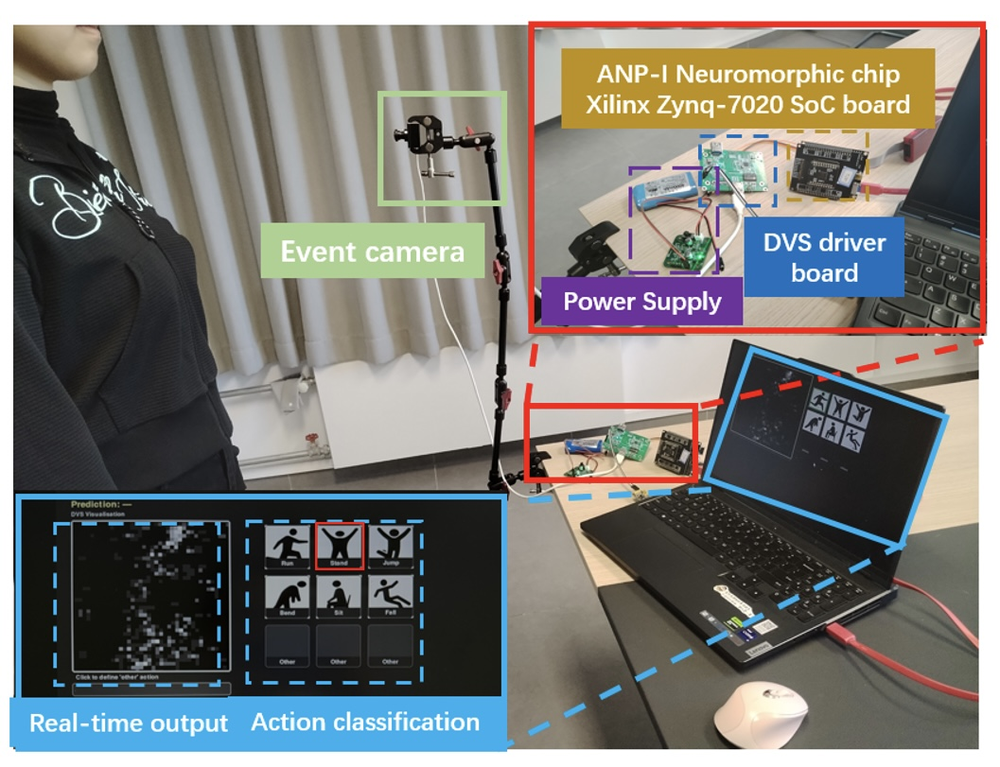
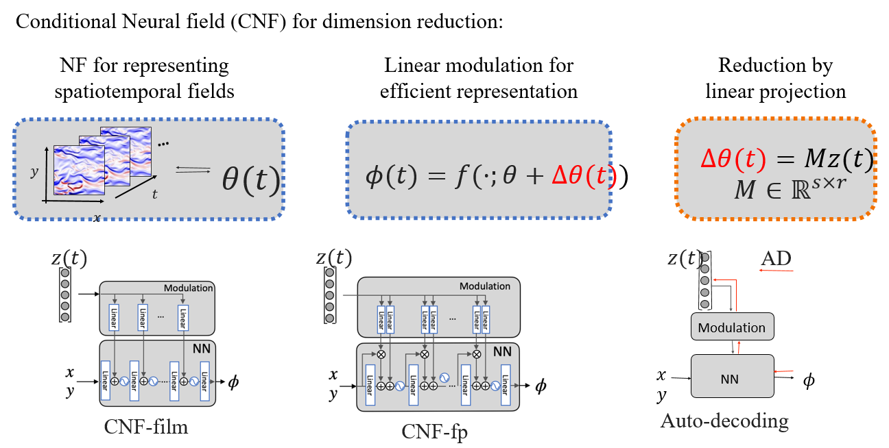

Research Interests
My research interests center on using the language of mechanics to model and understand real-world physical phenomena, drawing inspiration from natural systems to inform the design of engineered systems, potentially in combination with machine learning for better modeling and control.
Fluid-Structure Interaction; Computational Mechanics; Machine Learning for Physical Systems.
Research
Mechanics and Experiments of Sequential Shell Buckling
Part 1. Buckle and Bulge Sequences Investigation of Balloons
Part 2. Sequential snap-through dynamics and structure-acoustic coupling in curved shell systems, with applications to mechanically generated tonal sound.

Learning-Based Turbulence Control
Part 1. Conditional Neural Field for Spatial Dimension Reduction of Turbulence Data
PDFPart 2. Reinforcement Learning for Control in Turbulent Flows
Projects
Click on selected projects to see more details.

Turing Instability and Spatiotemporal Pattern Evolution in Predator-Prey Systems
course of Stability of Motion
PIV Investigation of Entrainment in a Free Jet
course of Fundamental Mechanics Innovation

Channel Turbulent Boundary Layer Analysis
course of Viscous Fluid
Publications

Flapping-Enhanced Active Olfactory Sampling in Mosquitoes through Near-Field Scalar Transport

Live Demonstration: Real-Time Event-Based Daily Human Action Recognition with On-Chip Learning on ANP-I

Conditional Neural Field for Spatial Dimension Reduction of Turbulence Data